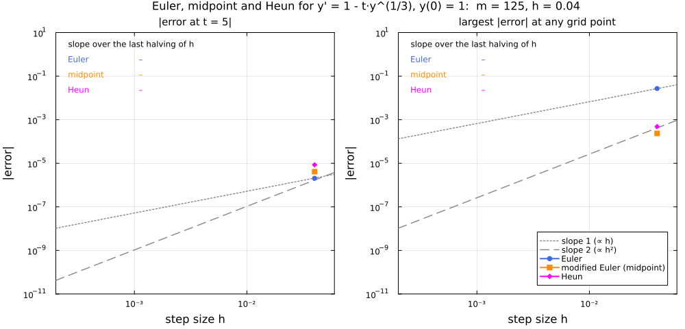

Heun’s Method
Source inspiration: (Mathew 2000-2019).
Description
Heun’s method solves the initial value problem \(y' = f(t, y)\), \(y(t_0) = y_0\), on \([t_0, b]\), at the grid points \(t_n = t_0 + nh\) of \(m\) subintervals of width \(h = (b - t_0)/m\). It writes \(y(t_{n+1}) = y(t_n) + \int_{t_n}^{t_{n+1}} f(t, y(t))\,dt\), approximates the integral by the trapezoidal rule, and predicts the unknown \(y(t_{n+1})\) inside it with an Euler step:
\[ p_{n+1} = y_n + h\,f(t_n, y_n), \qquad y_{n+1} = y_n + \frac{h}{2}\Bigl(f(t_n, y_n) + f(t_{n+1}, p_{n+1})\Bigr). \]
Some books call this the improved or modified Euler method; Mathews’ modified Euler method, on the Euler page, is the midpoint method.
Mathews’ theorem for the method assumes that \(f\) is continuous and Lipschitz in \(y\), and his precision theorem that the solution is in \(C^3[t_0, b]\). Then, in general, the local truncation error is \(O(h^3)\) and the global error, including the final global error at \(t = b\), is \(O(h^2)\): for small \(h\), halving \(h\) divides the error by about 4, against 2 for Euler’s method (Case 2, right panel).
The animations use \(y' = 1 - t\sqrt[3]{y}\), \(y(0) = 1\) on \([0, 5]\), with \(y(5) = 0.0081199205\). Here \(f\) is not Lipschitz near \(y = 0\), but the solution never falls below \(y(5)\). At \(m = 150\), the last frame of Mathews’ animation, Heun’s method gives \(y_{150} = 0.0081236\), the value it prints. The table gives the error \(y_m - y(5)\) and the largest error at any grid point, each with its ratio to the row above:
| \(m\) | \(h\) | \(y_m\) | error at \(t = 5\) | ratio | largest error | ratio |
|---|---|---|---|---|---|---|
| 150 | 0.03333 | 0.0081235818 | \(3.661 \times 10^{-6}\) | — | \(3.273 \times 10^{-4}\) | — |
| 300 | 0.01667 | 0.0081203664 | \(4.459 \times 10^{-7}\) | 8.21 | \(7.699 \times 10^{-5}\) | 4.25 |
| 600 | 0.00833 | 0.0081200086 | \(8.818 \times 10^{-8}\) | 5.06 | \(1.870 \times 10^{-5}\) | 4.12 |
| 1200 | 0.00417 | 0.0081199404 | \(1.995 \times 10^{-8}\) | 4.42 | \(4.608 \times 10^{-6}\) | 4.06 |
| 2400 | 0.00208 | 0.0081199252 | \(4.762 \times 10^{-9}\) | 4.19 | \(1.144 \times 10^{-6}\) | 4.03 |
The error at \(t = 5\) alone misleads (Case 2): at \(m = 150\) it is about twice Euler’s, and it stays larger than Euler’s up to \(m = 205\), although Heun’s largest error is 69 times smaller.
Heun’s method is explicit, and in general, on \(y' = \lambda y\), each step multiplies the error by \(1 + z + z^2/2\) with \(z = h\lambda\); for real \(z < 0\) this has size at most 1 only for \(-2 \le z \le 0\), Euler’s limit too. Here \(\partial f/\partial y = -t/(3y^{2/3})\) reaches \(-41.3\) at \(t = 5\), so for steps longer than about \(h = 0.0485\) (\(m \le 103\)), \(h\,|\partial f/\partial y|\) along the solution exceeds 2 before \(t = 5\) (Case 1), and every such run ends with a larger error than it had just before that point. At \(m = 70\) that point is \(t \approx 4.40\), and the error grows from \(1.0 \times 10^{-4}\) just before it to \(9.0 \times 10^{-3}\), so \(y_{70} = 0.0171\), about twice \(y(5)\). For \(3 \le m \le 68\) some predictions \(p_{n+1}\) are negative (and at \(m = 2\) the value \(y_1\) is), so those runs also depend on how \(\sqrt[3]{y}\) is taken there (the real cube root on this site).
Heun’s method is Euler’s method with a trapezoidal correction, equation (4) of Predictor-Corrector Methods, and a second-order Runge-Kutta method; RK4 and the Taylor Series Method reach higher orders.
Animations
Both animations use the IVP of the Description, \(y' = 1 - t\sqrt[3]{y}\), \(y(0)=1\) on \(0 \le t \le 5\), with the real cube root. Case 1 rebuilds Mathews’ animation Heunaa.gif, a step-refinement sweep, drawn as on the Euler’s Method page: each frame is a complete run with \(m\) subintervals (\(h=5/m\)), for the values of \(m\) in Mathews’ animation, drawn over a gray reference solution (fixed-step RK4 with 50 000 steps) and labelled with the computed \(y(5)\), its error at \(t=5\) and the largest error at any grid point of the run. A light red band marks where \(h\,|\partial f/\partial y|\), evaluated along the reference solution rather than the plotted run, exceeds the method’s stability limit 2. Case 2 is new, with no Mathews original: it plots the errors of Euler’s method, Mathews’ modified Euler (midpoint) method and Heun’s method against \(h\) on log-log axes.
Legacy archive note: Mathews’ Heunaa.gif is in the archive (36 frames showing 21 runs), and every \(y(5)\) it prints agrees with the runs here when rounded to seven decimals; the module’s Example 11 links to it. Not animated: the module’s Examples 1–10, whose equations were images the archive lost (Examples 1–4 and 5–8 compare Heun’s errors with 25 and 50, and with 50 and 100, subintervals, and Examples 9–10 follow a solution with a vertical asymptote that Heun’s method steps past), and Examples 9.6 and 9.7 of the textbook section the module links as its proof, which solve \(y' = (t - y)/2\) on \([0, 3]\).
Julia source scripts that generated these animations are linked under each case.
Case 1 — Heun step-refinement sweep, \(y' = 1 - t\sqrt[3]{y}\), \(y(0)=1\), \(m = 12\) to \(150\) subintervals
Behavior: The frames use the 21 values of Mathews’ animation, \(m = 12, 14, 16, 18, 20, 24, 28, 32, 36, 40, 44, 48, 52, 56, 60, 70, 80, 90, 100, 120, 150\) (the values of his modified Euler animation too), and the reference solution of the Euler page, which rises from \(y(0)=1\) to about \(1.4498\) near \(t=0.88\) and decays to \(y(5)=0.0081199\). No computed value \(y_n\) of any run is negative. For \(m=12\) to \(60\) the run falls to a minimum and then turns upward before \(t=5\), rising from that minimum by \(1.17\) at \(m=12\) and \(0.071\) at \(m=60\) and ending at \(y(5)\approx1.386\) and \(0.0832\); at \(m=36\), \(40\) and \(48\) to \(60\) the rise is interrupted by one or two downward steps of at most \(0.036\). At \(m=70\) the upturn is only \(0.0070\), too small to see at this scale, although \(y(5)\approx0.0171\) is about twice the reference value, and from \(m=80\) on the runs decrease steadily after their peak. For \(m=12\) to \(60\) some predictions \(p_{n+1}\) are negative (in this sweep none are from \(m=70\) on), so those frames depend on the real cube root.
The cause is stability. For \(m\le103\) (here \(m=12\) to \(100\)), \(h\,|\partial f/\partial y|\) along the reference solution exceeds \(2\) before \(t=5\) (the shaded region), from \(t\approx2.99\) at \(m=12\) to \(t\approx4.95\) at \(m=100\), and for each of these \(m\) the error at \(t=5\) is larger than just before the onset; for \(m=120\) and \(150\) it stays below \(2\) up to \(t=5\). Unlike Euler’s factor \(1+z\), which is below \(-1\) beyond the limit, Heun’s factor \(1+z+z^2/2\) is at least \(1/2\) for every real \(z\), so beyond the limit it is greater than \(1\) and positive: while the error is small compared with the solution, each step multiplies it by a factor greater than 1 without changing its sign. The coarse runs therefore turn upward and stay above the reference solution instead of swinging from one side of it to the other as Euler’s coarse runs do: for every \(m\) from \(12\) to \(100\) the error is positive at every grid point from the onset to \(t=5\). For \(m=12\) to \(20\) the turn comes at \(t=2.81\) to \(3.06\), just before the shaded region, where these runs are already \(15\%\) to \(77\%\) above the reference solution.
The error at \(t=5\) falls at every refinement in the sweep, from \(+1.4\) at \(m=12\) to \(+3.7\times10^{-6}\) at \(m=150\), where \(y(5)\approx0.0081236\), the value Mathews prints. For \(m=12\) to \(70\) the largest error of the run is at \(t=5\) or, at \(m=52\) and \(60\), one step before it. From \(m=80\) on it lies between \(t=3.08\) and \(3.12\), and the damping late in the run makes the error at \(t=5\) \(1.9\) to \(89\) times smaller than it: \(1.3\times10^{-3}\) against \(6.9\times10^{-4}\) at \(m=80\), and \(3.3\times10^{-4}\) against \(3.7\times10^{-6}\) at \(m=150\). From \(m=80\) to \(150\) that largest error falls by a factor of \(3.96\), close to the \((150/80)^2\approx3.5\) of a second-order method. At \(m=150\) it is about 69 times smaller than Euler’s \(2.2\times10^{-2}\) and about twice the modified Euler’s \(1.6\times10^{-4}\), while the error at \(t=5\) is about twice that of either.

Case 2 — Error against step size for Euler, modified Euler and Heun, same IVP, \(m = 125\) to \(16000\)
Behavior: Each frame adds one step count, \(m = 125, 250, 500, \dots, 16000\), so \(h=5/m\) halves from \(0.04\) to \(3.125\times10^{-4}\); the last frame is shown three times. Every one of these \(h\) is below \(0.0485\), so none of the runs meets the instability of Case 1. The left panel plots the absolute error at \(t=5\) (Euler’s error there is negative at every \(m\), the other two positive), and the right panel the largest absolute error at any grid point, both against fixed-step RK4 with 400 000 steps. The gray lines have slopes 1 and 2 and pass through the smallest-\(h\) point of Euler and of Heun. Each panel prints, for each method, the slope over the last halving of \(h\), the base-2 logarithm of the ratio of successive errors.
In the right panel the orders are clean over the whole range: the slope over each halving is \(1.00\) to \(1.01\) for Euler and \(2.00\) to \(2.11\) for modified Euler and Heun, and least-squares fits of \(\log(\text{error})\) against \(\log h\) over all eight points give \(1.00\), \(2.03\) and \(2.02\). Heun’s largest error, near \(t=3.07\) to \(3.08\), is \(2.05\) to \(2.07\) times the modified Euler’s, near \(t=3.17\) to \(3.20\); it is \(56\) times smaller than Euler’s, near \(t=1.66\) to \(1.68\), at \(h=0.04\) and about \(8200\) times smaller at \(h=3.125\times10^{-4}\).
In the left panel Euler’s error at \(t=5\) also halves with \(h\) (slopes \(0.99\) to \(1.00\)), but it is about \(1.3\times10^4\) times smaller than Euler’s largest error, because of the late damping described on the Euler page. The errors at \(t=5\) of modified Euler and Heun fall faster than \(h^2\) at first: their slopes are \(3.51\) and \(3.56\) over the first halving, then \(2.43\) and \(2.44\), \(2.18\), \(2.08\), \(2.04\), \(2.02\) and \(2.01\). A fit over all eight points gives \(2.24\) and \(2.25\), and over \(m=2000\) to \(16000\) (\(h\le0.0025\)) \(2.02\) for both, so the error at \(t=5\) shows the order cleanly only for the smaller steps. At \(h=0.04\) Heun’s error at \(t=5\), \(8.5\times10^{-6}\), is larger than Euler’s, \(2.1\times10^{-6}\); from \(h=0.02\) on it is smaller.
